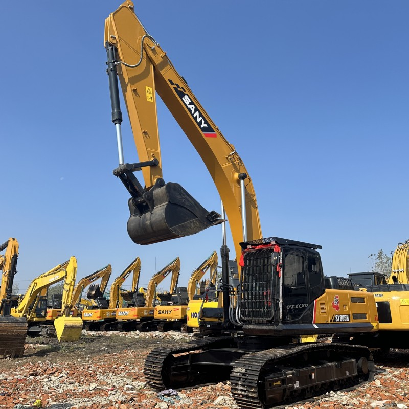

Refurbished SANY SY305 Excavator
SANY Heavy Industry, founded in 1989 in China, has grown into one of the world’s largest construction machinery manufacturers. By 2023, SANY ranked among the top five global excavator producers, with exports reaching over 150 countries and regions. The SY305 series, part of its large crawler excavator lineup, was designed to compete with industry giants like Caterpillar, Komatsu, and Hitachi in the 30-ton class. Known for its balance of power, fuel efficiency, and intelligent control systems, the SY305 quickly became a staple in mining, road building, and large-scale earthmoving projects.
Honestly, it's almost impossible to buy a brand new excavator from China. They either don't exist or are made in China. If a Chinese seller tells you their Caterpillar/Komatsu/Volvo/Kobelco/Hitachi is brand new, they're lying. Therefore, a refurbished excavator is your best bet.

Core Specifications and Capabilities
The refurbished SANY SY305 excavator typically retains the original high-performance specifications:
- Operating Weight: Approximately 30,000–31,000 kg
- Bucket Capacity: Ranges from 1.65 to 2.0 m³ depending on configuration
- Engine: Turbocharged 6-cylinder diesel engine, often EFI (Electronic Fuel Injection) equipped
- Hydraulic System: Advanced load-sensing system with original SANY hydraulic pump, valve, and cylinder
- Undercarriage: Heavy-duty track links and rollers for stability on uneven terrain
These machines are engineered for high productivity in demanding conditions, from rocky quarries to muddy construction sites. The reinforced boom and arm, crafted from high-strength steel, resist fatigue and deformation under continuous use.
General Specifications
- Operating Weight: 30,000–32,265 kg
- Engine Type: 6-cylinder turbocharged diesel
- Engine Power: Approximately 212–225 hp (158–168 kW)
- Fuel Tank Capacity: Around 540 liters
- Bucket Capacity: 1.65–2.0 m³ (standard: 1.7 m³)
- Max Digging Depth: 6.815 meters
- Max Reach (Horizontal): 10.87 meters
- Max Dump Height: ~7.2 meters
- Tear-Out Force: 153 kN
- Track Width: 600 mm
- Transport Dimensions (L×W×H): 10.667 × 2.99 × 3.28 meters
Hydraulic System
- Type: Load-sensing hydraulic system
- Main Pump Flow Rate: ~2 × 260 L/min
- System Pressure: Up to 34.3 MPa
- Control Valve: Multi-way valve with precision metering
- Hydraulic Oil Capacity: ~300 liters
Undercarriage and Structure
- Track Type: Heavy-duty crawler with sealed rollers
- Boom and Arm: Reinforced high-tensile steel
- Swing Speed: ~10.5 rpm
- Travel Speed: 3.5–5.5 km/h
- Gradeability: Up to 35°
Cab and Operator Features
- Cab Type: ROPS/FOPS certified
- Visibility: Panoramic glass with rear-view camera
- Controls: Ergonomic joysticks with customizable sensitivity
- Display: LCD monitor with real-time diagnostics
- Comfort: Air-conditioned, adjustable suspension seat
Smart Features and Efficiency
- Eco Mode: Adaptive engine output for fuel savings
- Auto Idle: Reduces fuel use during inactivity
- Remote Diagnostics: Optional telematics for fleet monitoring
- Fuel Efficiency: Up to 12% better than comparable models
Attachments Compatibility
- Standard Bucket: 1.7 m³ rock or earth bucket
- Optional Attachments: Hydraulic breaker, grapple, compactor, ripper
- Quick Coupler: Hydraulic or manual options available
Refurbishment Notes
Refurbished units often include:
- Engine overhaul with new injectors and seals
- Hydraulic pump recalibration or replacement
- Electrical system rewiring and sensor testing
- Cab restoration including seat, controls, and HVAC
- Repainting and structural crack repairs
These specs may vary slightly depending on the refurbishment level and year of manufacture. Always verify with the supplier for exact configuration.
What Refurbishment Typically Includes
Refurbished SY305 units undergo a comprehensive overhaul to restore performance and reliability. Key refurbishment steps often include:
- Engine Reconditioning: Cleaning, testing, and replacing worn components to restore horsepower and torque
- Hydraulic System Testing: Ensuring pump efficiency, valve responsiveness, and leak-free operation
- Electrical System Inspection: Rewiring, sensor calibration, and LCD monitor functionality checks
- Cab Restoration: Replacing worn seats, updating control panels, and ensuring HVAC performance
- Structural Repairs: Welding cracks, repainting surfaces, and replacing worn bushings or pins
Some units are advertised as “90% new,” indicating minimal operating hours (often under 2,000) and no history of major repairs. These machines may retain original paint and show no signs of oil leakage, which is a strong indicator of careful prior use.
Smart Features and Operator Comfort
Modern SY305 models—and well-refurbished units—include intelligent systems that enhance usability:
- Eco Mode: Adjusts engine output based on workload, reducing fuel consumption
- Real-Time Diagnostics: Monitors fuel usage, maintenance alerts, and system performance
- ROPS/FOPS Certified Cab: Ensures operator safety in rollover or falling object scenarios
- Ergonomic Controls: Adjustable seating, intuitive joystick layout, and panoramic visibility
These features contribute to reduced operator fatigue and improved jobsite efficiency, especially during long shifts.
Common Use Cases and Attachments
The SY305’s versatility makes it suitable for:
- Mining and Quarrying: High breakout force and large bucket capacity
- Urban Construction: Precision control for grading and trenching
- Demolition: Compatible with hydraulic breakers and grapples
- Forestry and Roadwork: Adaptable to mulchers, compactors, and rippers
Attachments are easily swapped thanks to standardized coupler systems, allowing one machine to serve multiple roles.
Market Availability and Pricing Trends
Refurbished SY305 excavators are widely available through international machinery dealers and exporters. In Shanghai alone, suppliers maintain inventories exceeding 3,000 units across all tonnage categories. Pricing varies based on condition, hours, and included attachments, but typical refurbished units range from $60,000 to $90,000 USD.
Buyers should verify:
- Machine Hours: Lower hours suggest less wear
- Component Authenticity: Original SANY parts ensure compatibility and longevity
- Test Reports: Confirm performance metrics and refurbishment quality
- Warranty Terms: Some suppliers offer limited warranties or return policies
A Real-World Example
In 2022, a construction firm in Nairobi acquired a refurbished SY305H for a major highway expansion project. Despite initial skepticism about secondhand equipment, the excavator performed flawlessly for over 1,500 hours, completing grading and trenching tasks ahead of schedule. The firm reported fuel savings of 12% compared to its older Komatsu PC300, attributing the efficiency to SANY’s eco-mode and hydraulic optimization.
Final Recommendations
For buyers considering a refurbished SY305:
- Inspect Core Components: Engine, hydraulic pump, and distribution valve are critical
- Request Maintenance Records: Even if minimal, they help assess prior usage
- Test Before Purchase: On-site trials reveal responsiveness and hidden issues
- Choose Reputable Suppliers: Prefer companies with formal export licenses and transparent practices
The refurbished SANY SY305 offers a compelling blend of power, efficiency, and value—especially for contractors seeking reliable performance without the cost of a brand-new unit. With proper vetting and maintenance, it can serve as a cornerstone of heavy-duty operations for years to come.
Our Commitment
- 2 years / 4000 hours warranty.
- EPA certified.
- No sweatshop labor.
Contacts

- [email protected]
- Youtube Instagram Facebook
- Navigation: G206 (Sishu Bridge) in Changfeng County, Hefei City, Anhui Province, 200 meters north to the east